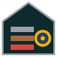

Propuesta de marca: versión B
Ver versión A · Sitio con la versión A · Sitio con la versión B
Una casa que reúne los dos negocios: las tres barras de materiales (cemento, madera y metal) representan construir, y el lente de cámara representa proteger. Los colores mantienen la misma lógica por servicio, con un carbón verdoso y tonos más intensos.

Soluciones2EAM
Soluciones2EAM
Paleta por servicio
Cemento · #5F6B70
Mejoras y remodelaciones, obra civil
Madera · #8A5A36
Acabados en madera
Pintura · #2F9E9E
Pintura y protección anticorrosiva
Electricidad · #F2B705
Electricidad residencial y botones de acción
Seguridad · #243B6B
CCTV, alarmas y portones eléctricos
Base: carbón verdoso #0F2A2E para textos y fondos oscuros, gris claro #EEF2F1 para fondos claros.